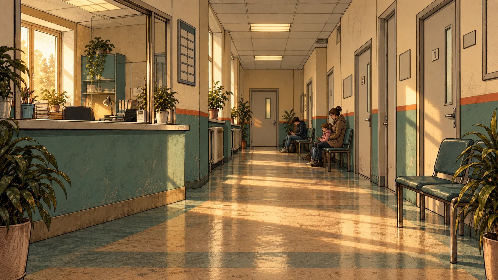

Окажись в знакомой ситуации
Друг/подруга просит в долг, одногруппник перекладывает задачу, кто-то проходит без очереди. Одна история занимает 3–5 минут
Короткие истории о разговорах, которые хочется переиграть
В «Persona» ты можешь отточить навыки чётких ответов. Выбираешь реплику или используешь микрофон, отвечаешь ИИ-агентам, которые отыгрывают роли реальных людей, а в конце видишь анализ и полный разбор своих ответов
15–20 минут разговора → бесплатный ранний доступ и премиум аккаунт на год
01 / ЗНАКОМО?
01 Говоришь «да» на просьбу, когда времени нет
02 Пропускаешь кого-то вперёд и злишься на себя
03 Молчишь в споре, а дома находишь нужные слова
НА СВЯЗИ
В истории он отвечает за живой разговор. После сцены помогает понять, что произошло.
ЧТО ОН ДЕЛАЕТ
Разбирает твои ответы, показывает последствия выбора и подсказывает, что можно попробовать иначе.
Становится собеседниками с разными характерами и целями — такими, каких можно встретить в очереди, на учёбе или среди друзей.
02 / ПРИМЕР ИСТОРИИ
Несколько минут, знакомая ситуация и люди, которые отвечают на твои слова. Нажми на реплику и посмотри, что произойдёт.

Мне только спросить. Пропустишь меня?
КОНЦЕПТ РАЗБОРА
ЧТО МОЖНО ПОПРОБОВАТЬ
Это иллюстрация механики с заранее написанными репликами. В будущей игре разговор будет развиваться по твоему выбору.
03 / КАК ЭТО РАБОТАЕТ
Друг/подруга просит в долг, одногруппник перекладывает задачу, кто-то проходит без очереди. Одна история занимает 3–5 минут
Выбери вариант или напиши свою реплику. У собеседников свои цели: они могут возразить, уступить или предложить другое
После истории увидишь полноценный разбор при помощи специального ИИ-агента и наблюдение по своим решениям. Несколько историй помогут заметить, какие выборы повторяются
04 / ПРИСОЕДИНИТЬСЯ
Мы собираем реальные ситуации для «Persona» и проверяем, узнаются ли в них люди. Расскажи об обычном разговоре, который хотелось бы переиграть, или просто поделись впечатлением от примера, а также ответь на пару вопросов, которые помогут улучшить проект!
Подготовка не нужна. Можно выбрать ситуацию, которую комфортно обсуждать.
05 / КОРОТКО О ГЛАВНОМ
Нет. Раннюю версию планируем открыть по ссылке в браузере и в Telegram.
Да, можно выбрать вариант, написать свою реплику или произнести её. В этом концепте кнопка микрофона появляется, если браузер поддерживает распознавание речи.
Полный разбор своих решений и методику, по которой можно улучшить свои ответы. По нескольким историям можно будет увидеть, какие выборы повторяются, а над какими вещами ещё стоит поработать.
Пришлём приглашение участникам интервью, когда будет готов ранний тест.
СЛЕДУЮЩАЯ РЕПЛИКА — ЗА ТОБОЙ
Помоги нам сделать первые истории живыми. Поговорим 15–20 минут — и ты получишь приглашение в бесплатный ранний доступ и премиум аккаунт на год.
Записаться на интервью